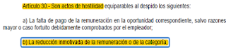

Opinión
LAS MEDIDAS LABORALES APLICABLES EN EL SECTOR PRIVADO DURANTE EL ESTADO DE EMERGENCIA COVID-19
Para evitar la propagación del nuevo coronavirus, Covid-19, el Presidente de la República anunció el inicio de Estado de Emergencia nacional desde el 16 de marzo del presente año, emitiendo tras ello una serie de paquetes normativos que regulan un abanico de medidas laborales que podría aplicar el empleador frente al Estado de Emergencia. Dicha situación es analizada por el autor con la finalidad de orientar al público en general sobre algunos aspectos principales de las medidas laborales en el sector privado, tales como: licencia con goce, vacaciones vencidas y adelantadas, reducción de remuneraciones y licencia sin goce.
I. INTRODUCCIÓN
Mediante Decreto Supremo 044-2020-PCM el Presidente de la República declaró el Estado de Emergencia Nacional desde el 16 de marzo del presente año y ante dicha situación, el empleador se encuentra obligado a tomar una serie de medidas laborales para garantizar el bienestar de los trabajadores, para ello el Estado ha promulgado paquetes normativos entre ellos el D.U N° 026-2020 y el D.U N° 029-2020 para reducir el riesgo de propagación del Covid-19 en la ejecución de las labores.
Los cambios regulatorios a nivel laboral permiten que las empresas de servicios esenciales puedan seguir laborando durante el Estado de Emergencia y en caso tenga que suspender sus actividades, podrán implementar el trabajo remoto teniendo en cuenta las medidas necesarias para garantizar la adecuada prestación de servicios. Para las actividades del trabajador que no se puedan realizar de manera remota, el empleador deberá implementar otras medidas y éstas serán el objeto de análisis del presente artículo.
De acuerdo con la legislación especial vigente, de manera preferencial el empleador deberá otorgar una licencia con goce de haber, esto en aplicación del principio de especialidad por contraposición de estas normas con la normativa general. Respecto al sector privado, este tipo de licencias implican una recuperación posterior de las horas no trabajadas, previo acuerdo con el empleador. Además de esto, la normatividad faculta al empleador de acordar con el trabajador el uso de sus vacaciones vencidas o anticipadas para cubrir los días que dure el aislamiento.
Por otro lado, si nos encontramos ante la situación excepcional que el empleador tenga que ordenar la reducción de las remuneraciones por motivo de caso fortuito o fuerza mayor -como lo es el Covid-19- de acuerdo con los dispositivos legales vigentes y la jurisprudencia es una opción válida, siempre y cuando se cumplan las reglas establecidas en las fuentes del derecho mencionados.
Finalmente, en lo referido a las licencias sin goce, ésta resulta ser una medida excepcional y antes de proceder a su aplicación se deberá demostrar que se agotaron todas las medidas y cumplir con lo dispuesto en el D.U N° 038-2020.
II. ANÁLISIS
Mediante Decreto Supremo Nº 010-2020-TR el Gobierno dispuso la regulación del trabajo remoto en el sector privado en el marco de la emergencia sanitaria por el COVID-19. Esta modalidad puede ser implementada comunicando a los trabajadores por escrito o por medio digital, tales como: correo electrónico corporativo, redes sociales, aplicaciones de mensajería instantánea, entre otros. Es una modalidad que no afecta el vínculo laboral, la remuneración o demás condiciones económicas, solo impacta en lo vinculado a la asistencia al centro de labores debido a que la prestación de servicios lo realiza el trabajador desde su hogar. Es una medida mucha más sencilla de utilizar que el teletrabajo, pero no nos detendremos a analizar este extremo.
Existen medidas labores que sí podrían tener un impacto en el vínculo laboral, la remuneración y demás condiciones económicas, por lo que el presente trabajo estará enfocado en analizar aquellas medidas que podría aplicar el empleador para aquellos trabajadores que no se encuentran realizando trabajo remoto, siendo éstas las siguientes:
2.1.Suspensión imperfecta - Licencia con goce sujeto a compensación
La suspensión del contrato de trabajo tiene como sustento en el principio de continuidad laboral, el cual busca preservar la continuidad de la relación laboral y considerar aquellos intervalos de tiempo sin prestación de servicios como meras suspensiones del contrato de trabajo manifestados mediante las licencias.
La legislación laboral regula las licencias como un derecho potestativo del empleador en el literal k) del artículo 12 de la Texto Único Ordenado de la Ley de Productividad y Competitividad Laboral (en adelante LPCL), aprobado mediante Decreto Supremo N° 003-97-TR.
En palabras de Zamora Chávez (ZAMORA CHÁVEZ, 2015) las licencias con goce de haber implican que se suspenda temporalmente la prestación efectiva de servicios, sin embargo el empleador cuenta con la obligación de abonar la remuneración (pág. 106). Entonces, las licencias son permisos otorgados por el empleador a modo facultativo y forman parte de las causas de la suspensión del contrato de trabajo, regulada como suspensión imperfecta, liberando temporalmente a las partes del cumplimiento de sus obligaciones sin llegar a fracturar el vínculo laboral.
Frente a la situación generada por el Estado de Emergencia, el artículo 20.2 del Decreto de Urgencia N° 026-2020 (publicado el 15 de marzo del 2020) hace referencia a lo que debe hacer el empleador con los trabajadores cuyos servicios (por su naturaleza) no encuadran en la modalidad del “trabajo remoto”: otorgarles una “licencia con goce de haber sujeta a compensación posterior”, por lo que de la lectura de la norma podemos inferir que esta medida debe ser la aplicable de manera preferente antes de recurrir a la suspensión perfecta de labores.
Se debe tener en cuenta que las leyes promulgadas en Estado de Emergencia contienen varias materias que se encuentran siendo reguladas por una norma especial, por lo que, en caso de concurrencia con la normativa general tienen aplicación prevalente por aplicación del principio de especialidad. Ello explicaría la razón de la preferencia de la licencia con goce de haber compensable sobre la licencia sin goce de haber regulado por el artículo 15 de la LPCL[1].
Por otro lado, uno de los problemas que trajo consigo esta medida es la imposibilidad de compensar lo pagado por licencia con goce en caso de renuncia o por finalización del contrato debido a que la norma no regula supuesto referido a detraer lo pagado, por lo que de ninguna forma podemos concluir de manera “extra-legal” que sería posible detraer lo pagado por licencia en la liquidación de beneficios sociales. Además, recomiendo la lectura de este comentario hecho por Ana Cecilia Crisanto (CRISANTO CASTAÑEDA, 2020) publicado en El Peruano:
Aparentemente puede verse injusto porque no sería posible jurídicamente realizar el descuento, una posible salida podría ser la renovación del contrato de trabajo, pero esto no funciona en todos los supuestos, por lo que considero que la solución se encuentra en manos del Gobierno, el cual debe analizar la situación y equilibrar las reglas del juego con la finalidad de proteger la economía de todos los empresarios dictando normas adicionales que permitan realizar los acuerdos de compensación.
2.2.Compensación con vacaciones vencidas o adelantadas
El ordenamiento jurídico-laboral peruano, establece que un trabajador al cumplir un año de servicios en una empresa cuenta con el derecho a gozar de 30 días de descanso vacacional y la gran inquietud que tenía el empresariado era saber si sería viable utilizar las vacaciones como medio para cubrir los días de cuarentena, beneficiando de esta forma a ambas partes con la aplicación de esta medida.
Al Respecto, el artículo 26.2 del Decreto de Urgencia N° 029-2020 (publicado el 20 de marzo del 2020) regula lo siguiente:
“En el caso de las actividades no comprendidas en el numeral precedente y, siempre que no se aplique el trabajo remoto, los empleadores otorgan una licencia con goce de haber a los trabajadores y servidores civiles, de acuerdo a lo siguiente:
(…)
b) En el caso del sector privado, se aplica lo que acuerden las partes. A falta de acuerdo, corresponde la compensación de horas posterior a la vigencia del Estado de Emergencia Nacional”.
En mi opinión, la norma al hacer referencia “A falta de acuerdo”, se infiere que sería posible acordar previamente con el trabajador el uso de sus vacaciones vencidas o anticipadas para cubrir los días que dure el aislamiento y en caso el trabajador se rehúse a suscribir el acuerdo, sería aplicable la licencia con goce, correspondiendo la compensación de horas posterior al Estado de Emergencia.
Además de lo anterior, de acuerdo con la última Guía de Preguntas publicada el 08 de abril por el Ministerio de Trabajo y Promoción del Empleo (MTPE), la entidad mencionó que:
“Si el trabajador presta servicios en actividades vinculadas con servicios y bienes esenciales y, por tanto, continúa laborando en el estado de emergencia, surte efectos el acuerdo para disfrute de vacaciones ya devengadas o de adelanto de vacaciones.”
Una de las características del presente Estado de Emergencia es la gran incertidumbre jurídica que existe al momento de analizar las normas y lo concerniente a las vacaciones no es una excepción, sin embargo, en muchas ocasiones este problema ha sido corregido o aclarado por el Gobierno peruano. El 21 de abril del 2020 fue publicado el Decreto Supremo N° 011-2020, el cual en su artículo 4° habilita textualmente utilizar las vacaciones a fin de mantener el vínculo laboral y el pago de la remuneración en los días de cuarentena.
2.3.Reducción de remuneraciones: Un antecedente muy reciente de esta medida tenemos con lo sucedido entre la empresa de aerolíneas LATAM y el Sindicato de Pilotos de Lan Perú S.A. – SIPLAP, cuando ambas partes acordaron reducir el 50% de las remuneraciones de los trabajadores por motivos del COVID-19, esto con la finalidad de evitar el cese colectivo que conlleven a la pérdida de puestos de trabajo y remuneraciones.
Del ejemplo anterior, se advierte que entre la empresa y el sindicato cuentan con un acuerdo válido en concordancia con la legislación vigente y los últimos pronunciamientos del Tribunal Constitucional y la Corte Suprema de la República.
La pregunta del millón sería:
¿qué sucede cuando la decisión de reducir las remuneraciones es unilateral?. |
Debemos señalar que la remuneración no es un derecho ilimitado resulta viable su reducción, siempre que obedezca a causas objetivas (fuerza mayor o caso fortuito) y se ajuste a criterios de excepcionalidad, razonabilidad y proporcionalidad, no siendo posible que sea inferior a la remuneración mínima vital. En lo referido a la reducción no consensuada o unilateral, en la actualidad no existe fuente jurídica que lo habilite, toda vez que una ley promulgada en el año 2017 cambió las reglas del juego, siendo la reducción consensuada la única opción habilitada para hacerlo.
Para hacer un recuento histórico, la legislación nacional mediante Ley N° 9463 del 17 de diciembre de 1941 (norma vigente hasta la fecha), establece que es posible la reducción de remuneraciones en la medida que exista un acuerdo entre el trabajador y el empleador.
Asimismo, el literal b) del artículo 30° de la LPCL, regula que la reducción inmotivada de remuneraciones importa un acto de hostilidad.
Adicional a lo anterior, el artículo 49 del Reglamento de la Ley de Fomento al Empleo aprobado por DS N° 001-96-TR, dispone que la reducción inmotivada se produce cuando existe una falta de causa objetiva o legal que sustente la rebaja salarial.
Una interpretación en sentido contrario del precepto legal anterior nos hace inferir que si existe motivo debidamente justificado, sería perfectamente posible la disminución de la remuneración sin que configure como un acto de hostilidad.
Esto último, es ratificado por el Tribunal Constitucional en el fundamento 42 de la sentencia emitida en el Expediente N° 0020-2012-PI/TC la cual será analizada más adelante.
Las reglas del juego fueron cambiadas cuando el 27 de diciembre del 2017 se publica la Ley N° 30709, la cual modificó el literal b) del artículo 30 de la LPCL, suprimiendo el término “inmotivada” de su redacción:
ANTERIOR REDACCIÓN | ACTUAL REDACCIÓN |
|---|---|
 | PRIMERA. Modificación de la Ley de Productividad y Competitividad Laboral Modifícase el artículo 30.b) del TUO del Decreto Legislativo 728: “Artículo 30.- Son actos de hostilidad equiparables al despido, los siguientes: […] b) La reducción de la categoría y de la remuneración. |
La redacción de la norma nos da a entender que desde el 28 de diciembre del 2017 cualquier reducción de la remuneración constituye acto de hostilidad, sin ponerse dentro del supuesto que las empresas podrían verse sumergidas en problemas económicos por motivos de caso fortuito o fuerza mayor o en el supuesto que nos encontramos en la actualidad como lo es la crisis generada por una pandemia mundial.
El actual texto normativo desconoce la posibilidad de poder que reducir de forma motivada las remuneraciones; es decir, siempre que concurran causas objetivas debidamente comprobadas en las que el empleador se encuentre en una situación de última ratio, de poder reducir unilateralmente las remuneraciones de manera temporal, con la finalidad de salvaguardar los puestos de trabajo.
Lo anterior cuenta con sustento jurisprudencial vinculante. Con sentencia del Expediente N° 0020-2012-PI/TC emitida el 16 de abril del 2014 el Tribunal Constitucional, especificó que, la reducción de remuneraciones puede aplicarse de dos formas:
- Consensuada: de manera voluntaria, mediante un acuerdo libre, espontáneo, expreso y motivado entre el trabajador y el empleador.
- No consensuada: Cuando es adoptada por decisión unilateral por parte del empleador, ya sea particular o el Estado mismo, es decir, sin aceptación previa del trabajador. ´Resulta viable por causa objetiva y justificada, siempre que dicha disminución de haberes refleje la expresión de los motivos o razones por los que se procede a la reducción de la remuneración (fundamentos 41 al 43). Esto resultó de una interpretación en sentido contrario del artículo 30, literal “b” de la LPCL antes que fuera modificado por la Ley N° 30709.
En la misma línea, la Corte Suprema mediante Casación Laboral N° 489-2015-Lima manifiesta que para que se configure una rebaja de remuneraciones se debe contar con los siguientes elementos: a) La reducción de remuneración no vaya por debajo de los límites establecidos por las normas laborales, esto es, que dicha remuneración no puede ir por debajo de la remuneración mínima vital, b) La disminución del salario responda a circunstancias objetivas; y, c) La rebaja debe ser autorizada por el trabajador en forma expresa, sin que deje lugar a dudas de su voluntad.
El Décimo Considerando de la sentencia menciona que la reducción de la remuneración ya sea consensuada o no consensuada, resulta válida mientras sea “excepcional y razonable”. La reducción de la remuneración es excepcional si es una medida extraordinaria y que tiene lugar en contextos especiales. Es razonable si respeta determinados límites de proporcionalidad, de manera tal que no suponga una disminución significativa ni arbitraria de la remuneración.
Posteriormente, el mismo Órgano Supremo emitió la Casación Laboral N° 3711-2016-Lima con la intención de “aclarar” la Casación Laboral N° 489-2015-Lima. En el décimo cuarto considerando de la Casación Laboral N° 3711-2016-Lima se ratificó que la reducción de salarios es una medida excepcional, la cual solo debe aplicarse a contextos especiales que justifiquen tal alternativa y respetando determinados mínimos necesarios como lo es la remuneración mínima vital. Siendo así, dejó establecido que la reducción de remuneraciones solo podía darse de las maneras siguientes:
- Acuerdo individual: se presenta cuando empleador y trabajador celebran un acuerdo o convenio escrito conforme a los alcances de la Ley N° 9463.
- Acuerdo colectivo: Se presenta cuando la reducción de la remuneración tiene como origen alguna de las causas objetivas previstas en el artículo 46 de la LPCL, es decir, la reducción deberá obedecer a la presencia de un caso fortuito, fuerza mayor, motivos económicos, tecnológicos, estructurales o análogos, la disolución y liquidación de la empresa, la quiebra o la reestructuración patrimonial (explicadas en el décimo séptimo considerando). En este segundo caso, debe existir también acuerdo entre el empleador y la organización que representa a los trabajadores.
Debemos precisar que cuando se emitió la casación citada y la sentencia del Tribunal Constitucional, aún no se había modificado la literalidad inicial del literal b) del artículo 30 de la LPCL por la Ley N° 30709, por lo que la nomenclatura inicial que regulaba la reducción “inmotivada” de la remuneración continuaba vigente. De haber existido alguna causa objetiva, la reducción de la remuneración unilateral no constituiría acto de hostilidad equiparable al despido.
Entonces, por lo mencionado anteriormente la reducción unilateral de la remuneración no sería posible, ello además en concordancia con los distintos dispositivos emitidos tal y como es el Decreto de Urgencia N° 026-2020 el cual establece en su artículo 18.1.1 que el empleador cuenta con la obligación de no afectar la naturaleza del vínculo laboral, la remuneración, y demás condiciones económicas. La interpretación es literal, la norma imposibilita modificar la remuneración unilateralmente e implícitamente hace referencia que sería posible reducirla, de existir acuerdo entre las partes sustentado en este Estado de Emergencia.
Otra razón para concluir que la reducción unilateral no resulta posible lo encontramos tácitamente en el artículo 3 del Decreto de Urgencia N° 38-2020, artículo cuya denominación es “Medidas aplicables a las relaciones laborales en el marco del Estado de Emergencia Nacional y Emergencia Sanitaria”. Este artículo no habilita dentro del texto la posibilidad de reducir unilateralmente las remuneraciones.
Finalmente, para poder aplicar de manera no consensuada la reducción de remuneraciones se debe tener en consideración la aplicación de los principios generales del derecho del trabajo tales como el principio de razonabilidad y proporcionalidad, por lo siguiente:
Si bien es cierto, para la reducción unilateral de la remuneración se necesitan causas objetivas, también lo es que, la disminución salarial no puede ser en cualquier monto. La reducción no podrá ser inferior a la remuneración mínima vital vigente (S/. 930.00).
Además, resulta indispensable que tal decisión sea respetando estrictamente un criterio de proporcionalidad, es decir, que exista una conexión razonable entre el monto que se percibía respecto al que se ganará ahora. Por ejemplo, si el trabajador recibía como sueldo S/. 5,000.00 soles disminuirlo a S/. 930.00 sería totalmente desproporcional, quizá hasta el 50% sería correcto, tomando en cuenta que dicho 50% (S/. 2,500.00) representa un poco más de dos remuneraciones mínimas vitales (S/. 1860.00).
Sin duda, esta medida debe ser meditada para ser aplicada como medida excepcional, por su grave impacto que podría generar en la vida de los trabajadores.
2.4.Suspensión perfecta - Licencia sin goce de haber
Esta ha sido la medida más polémica durante el asilamiento por las idas y venidas de opiniones oficiales y exigencias del gremio empresarial y hasta ha generado que muchas empresas apliquen unilateralmente esta medida ante tanta incertidumbre y desinformación.
A diferencia de la licencia con goce, la licencia sin goce de haber implica una suspensión perfecta del contrato de trabajo y exime al empleador de la obligación de abonar la remuneración al trabajador. La situación se vuelve polémica cuando normativamente se exige en general que empresas que no cuentan con capital continúen pagando la remuneración y cuando empresas que sí cuentan con sustento económico otorguen licencias sin goce. Todo esto originó que exista mucha presión para el Estado, del cual se esperaba una pronta respuesta normativa para delimitar las fronteras que exige la aplicación de esta medida en la realidad.
La Ministra de Trabajo Sylvia Cáceres en una entrevista[2] realizada el 31 de marzo, declaró que se evaluaría el otorgamiento de la licencia con o sin goce de haber durante los 13 días de cuarentena siguientes al 30 de marzo. La respuesta llegó el 14 de abril, fecha que fue publicado el Decreto de Urgencia N° 38-2020 el cual en su artículo 3.2 establece lo siguiente:
“3.2 Excepcionalmente, los empleadores referidos en el numeral precedente pueden optar por la suspensión perfecta de labores exponiendo los motivos que la sustentan, para lo cual presenta por vía remota una comunicación a la Autoridad Administrativa de Trabajo con carácter de declaración jurada según formato que como Anexo forma parte del presente Decreto de Urgencia (…)”
Una de las novedades que trae consigo esta norma es la opción que tiene el trabajador solicitar a su empleador el adelanto del pago de la CTS del mes de mayo de 2020 y de la gratificación del mes de julio de 2020 en el supuesto que se encuentre en una suspensión perfecta de labores prevista en el marco legal vigente.
III. CONCLUSIONES
Si se prorroga el Estado de Emergencia vigente hasta el 12 de abril, las medidas laborales que podría tomar el empleador en caso no pueda aplicarse el trabajo remoto, serían las siguientes:
1. Licencia con goce de haber sujeto a compensación. De la lectura del Art. 26.2 del D.U. N° 029-2020 podemos inferir que esta medida debe ser la aplicable de manera preferente antes de recurrir a la suspensión perfecta de labores. ¿La razón? Las leyes promulgadas en Estado de Emergencia contienen varias materias que se encuentran siendo reguladas por una norma especial, por lo que, en caso de concurrencia con la normativa general tienen aplicación prevalente por aplicación del principio de especialidad. Ello explicaría la razón de la preferencia de la licencia con goce de haber compensable sobre la licencia sin goce de haber regulado por el artículo 15 de la L.P.C.L.
2. En cuanto a las vacaciones vencidas o adelantadas, el empleador no las podría otorgar unilateralmente porque no existe una norma que lo habilite, por lo que el trabajador debería seguir con licencia con goce de haber; sin embargo, la normatividad vigente sí admite el otorgamiento de vacaciones vencidas o adelantadas si existe previo acuerdo. Esta situación es un win-win para ambas partes porque por un lado el trabajador obtiene liquidez sin comprometerse a recuperar horas y por otro lado el empleador disminuye las obligaciones que generan los costos laborales.
3. En cuanto a la reducción de remuneraciones es una medida excepcional y podría ser es un camino viable. De acuerdo con lo regulado en el D.U. N° 026-2020 el empleador no puede afectar la remuneración de sus trabajadores y por lo tanto no resulta posible reducir unilateralmente la remuneración; sin embargo, la norma señalada habilita implícitamente al empleador a reducirla mediante acuerdo sustentado; es decir, debe existir una causa objetivamente comprobable de que la empresa no está en condiciones económicas de hacerse cargo del pago de las remuneraciones y además debe existir acuerdo expreso. La reducción debe llevarse a cabo guardando respeto a los principios de razonabilidad y proporcionalidad.
4. En cuanto a la suspensión perfecta de labores, se pudo ver que al inicio del Estado de Emergencia su aplicación directa no era viable por aplicación del principio de especialidad al darse la preferencia a la licencia con goce; sin embargo, en la actualidad el empleador puede solicitarlo sujetándose a lo dispuesto por el D.U N° 038-2020, dispositivo legal que además habilita al trabajador solicitar el adelanto del pago de la CTS del mes de mayo de 2020 y de la gratificación del mes de julio de 2020 en el supuesto que se encuentre en una suspensión perfecta de labores prevista en el marco legal vigente.
5. Además de estas medidas, se debe tomar en consideración que el Estado ha puesto a disposición una serie de opciones para disminuir el impacto económico para ambas partes, tales como el adelanto del pago de la C.T.S, gratificaciones, el cobro de sus aportes previsionales, entre otros, para que el trabajador pueda tener liquidez en un periodo en donde tenga poca o nula capacidad económica.
IV. CONSULTAS ADICIONALES
4.1 ¿Existe obligación del empleador de renovar automáticamente el contrato de trabajo del trabajador que culmina labores en Estado de Emergencia?
De acuerdo con el literal “c” del artículo 16 de la LPCL, la extinción de la relación laboral por vencimiento del contrato de trabajo es válida, aun estando dentro de un Estado de Emergencia Nacional, en consecuencia el empleador no tiene obligación de renovar el contrato. El único supuesto de renovación automática de contrato de trabajo regulado por la legislación laboral es el caso de la trabajadora embarazada o en periodo de lactancia, regulado por el artículo 6° de la Ley N° 30709, Ley que prohíbe la discriminación remunerativa entre varones y mujeres.
4.2 ¿La obligación de otorgar licencia con goce de haber solo estuvo vigente hasta el 30 de marzo del 2020?, ¿es posible otorgar licencia sin goce de haber a partir del 31 de marzo del 2020?
Al respecto, el Estado de Emergencia se decretó hasta el 30 de marzo del 2020 y al iniciar el primer tramo se dictaron dos normas para los trabajadores que no pudiesen realizar trabajo remoto (Art. 20.2 del D.U. 026-2020 y el Art. 26.2 del D.U. 029-2020), ninguna de las dos tiene una fecha de derogación expresa, vale decir no señalan que estarán vigentes hasta el 30 de marzo del 2020, sino que están diseñadas para regir durante el Estado de Emergencia y si se prorroga, tal y como ha sucedido, lo lógico y jurídicamente razonable es que las normas también mantengan su vigencia hasta que expresamente se deroguen. La ley se deroga por otra ley o por sentencia que declare su inconstitucionalidad, artículo 103 de la Constitución.
4.3 En el caso de los trabajadores considerados como grupo de riesgo ¿Hasta cuándo estaría obligado el empleador para aplicar el trabajo remoto o licencia con goce sujeto a compensación?
Sobre el trabajo remoto y licencia con goce sujeto aplicables para este grupo de trabajadores, el artículo 20 del D.U N° 026-2020 establece lo siguiente:
“20.1 El empleador debe identificar y priorizar a los trabajadores considerados en el grupo de riesgo por edad y factores clínicos establecido en el documento técnico denominado “Atención y manejo clínico de casos de COVID-19 - Escenario de transmisión focalizada”, aprobado por Resolución Ministerial Nº 084-2020-MINSA y sus modificatorias, a efectos de aplicar de manera obligatoria el trabajo remoto en estos casos.
20.2 Cuando la naturaleza de las labores no sea compatible con el trabajo remoto y mientras dure la emergencia sanitaria por el COVID-19, el empleador debe otorgar una licencia con goce de haber sujeta a compensación posterior.”
Lo que nos indica la norma es que durante la emergencia sanitaria de 90 días calendario declarada por el D.S. N° 008-2020-SA (publicado el 11 de marzo del 2020) y regulado por el artículo 1°[3], el empleador primero debe identificar y priorizar a los trabajadores considerados en el grupo de riesgo para cuadros clínicos severos de muerte, a efectos de aplicar de manera obligatoria el trabajo remoto y en caso las labores no sean compatibles, el empleador debe otorgar una licencia con goce de haber sujeta a compensación posterior.
Respondiendo a la consulta, al hacer referencia la norma sobre: “mientras dure la emergencia sanitaria” (que no es lo mismo que Estado de Emergencia) [4] nos da a entender que el trabajo remoto o la licencia con goce sujeto a compensación serán aplicables hasta que culmine la emergencia sanitaria; es decir, contabilizar los 90 días calendarios desde que está vigente el D.S. N° 008-2020-SA, con fecha 11 de marzo del 2020 hasta el 09 de junio del 2020.
En caso de otorgarse licencia con goce, si hablamos en términos de productividad, es muy difícil pensar que los trabajadores considerados como “grupo de riesgo” puedan tener más eficiencia al reincorporarse conociendo que trabajarán más horas. Como menciona Percy Alache hoy en una entrevista para RPP[5], la recuperación de horas por todo el tiempo de la cuarentena puede ocasionar otros problemas graves: jornadas de trabajo extensas (por varias semanas/meses), deterioro de la salud del personal y baja productividad. La recuperación de horas contra días de vacaciones ganadas o adelantadas (en esta situación de crisis) debería ser otra posibilidad, siempre que exista acuerdo.
4.4 ¿Podría el empleador utilizar unilateralmente el descanso vacacional para cubrir los días de cuarentena?
A falta de acuerdo, el empleador decide la oportunidad del descanso vacacional haciendo uso del poder de dirección, por lo que sí sería posible jurídicamente hablando, esto en concordancia del artículo 14° del Decreto Legislativo N° 713, Ley sobre descansos remunerados de los trabajadores sujetos al régimen laboral de la actividad privada.
4.5 ¿Era posible acordar vacaciones adelantadas antes de la entrada en vigencia del D.S N° 011-2020?
Sí, dicha norma solo ratificó lo que contenía implícitamente el artículo 26.2 del D.U N° 029-2020:
“En el caso de las actividades no comprendidas en el numeral precedente y, siempre que no se aplique el trabajo remoto, los empleadores otorgan una licencia con goce de haber a los trabajadores y servidores civiles, de acuerdo a lo siguiente:
(…)
b) En el caso del sector privado, se aplica lo que acuerden las partes. A falta de acuerdo, corresponde la compensación de horas posterior a la vigencia del Estado de Emergencia Nacional”.
Cuando la norma indica “A falta de acuerdo”, se infiere que sería posible acordar previamente con el trabajador el uso de sus vacaciones vencidas o anticipadas para cubrir los días que dure el aislamiento.
4.6 ¿Durante la suspensión perfecta de labores se continúan pagando las prestaciones de salud?
Sí, el artículo 5.1 del D.U N° 038-2020 habilita la continuidad del pago de las prestaciones de prevención, promoción y atención de la salud a cargo del Seguro Social de Salud - EsSalud, para todos los trabajadores comprendidos en una suspensión perfecta de labores, por el tiempo de duración de dicha suspensión, aun cuando no cuenten con los aportes mínimos establecidos en el artículo 11 de la Ley Nº 26790.
4.7 ¿Qué sucede si antes de la entrada en vigencia del D.U N° 038-2020 se aplicó la suspensión perfecta de labores – licencia sin goce a los trabajadores?
Antes de la entrada en vigencia de dicho dispositivo, la suspensión perfecta se encontraba regulada por la normativa general, el artículo 15 de la LPC, con lo siguiente:
“Artículo 15.- El caso fortuito y la fuerza mayor facultan al empleador, sin necesidad de autorización previa, a la suspensión temporal perfecta de las labores hasta por un máximo de noventa (90) días, con comunicación inmediata a la Autoridad Administrativa de Trabajo. Deberá, sin embargo, de ser posible, otorgar vacaciones vencidas o anticipadas y, en general, adoptar medidas que razonablemente eviten agravar la situación de los trabajadores. La Autoridad Administrativa de Trabajo bajo responsabilidad verificará dentro del sexto día la existencia y procedencia de la causal invocada. De no proceder la suspensión ordenará la inmediata reanudación de las labores y el pago de las remuneraciones por el tiempo de suspensión transcurrido”.
En caso de haberse aplicado la suspensión perfecta de labores antes de la vigencia de la norma en mención, el empleador deberá tener respaldo probatorio para acreditar a la Autoridad Administrativa de Trabajo que la aplicación de esta medida cuenta con sustento técnico sobre el balance económico de la empresa, en caso no se logre acreditar, la medida no procederá y la entidad ordenará el pago de las remuneraciones por el tiempo de suspensión transcurrido.
Para tener mayor claridad se deben revisar los pronunciamientos y precedentes de la Autoridad Administrativa de Trabajo emitidos en los últimos años, para ello recomiendo revisar el siguiente cuadro de criterios compilados por el Dr. Luis Alberto Huamán Ordoñez, publicada en su cuenta de Linkedin:
PRECEDENTES Y RESOLUCIONES ADMINISTRATIVAS SOBRE LA SUSPENSIÓN PERFECTA DE LABORES CRITERIO | DETALLE DEL CRITERIO |
La suspensión perfecta es válida si ha sido declara procedente por La Autoridad Administrativa de Trabajo | Resolución Directoral General N° 001-2016-MTPE/2/15 Debido a que los efectos de la suspensión inciden directamente en los derechos de los trabajadores, la normativa sujeta la procedencia de la medida a una necesaria verificación de la Autoridad Administrativa de Trabajo. |
El vencimiento del plazo de la Autoridad Administrativa de Trabajo no impide la verificación de las causas de la suspensión perfecta | Resolución Directoral General N° 011-2012-MTPE/2/12 Si bien existe un plazo de 06 días para que la Autoridad Administrativa Laboral, el vencimiento de este plazo no puede impedir la verificación de las causas y consecuencias de los motivos que sustentaron la suspensión temporal perfecta de labores. Incluso, si el empleador no otorga facilidades a la inspección laboral para efectuar esta verificación, se deberá rechazar la suspensión sin perjuicio de la infracción por obstrucción a la labor inspectiva. Por otro lado, se revisará si las labores de los trabajadores suspendidos han sido ocupadas por otros trabajadores y, además, si la suspensión ha estado dirigida para afectar derechos colectivos. |
La suspensión temporal es excepcional y antes de ejecutarse debe encontrarse precedida de otras medidas menos gravosas para el trabajador | Resolución Directoral General N° 010-2012-MTPE/2/4 La suspensión perfecta de labores es excepcional, ya que constituye una medida con un efecto desestabilizador de la situación de empleo ya que durante su vigencia, por la no percepción de remuneraciones, se coloca al trabajador en una situación de desempleo. Asimismo, se establece que el empleador debe, de ser posible, otorgar vacaciones vencidas o anticipadas y, en general, adoptar medidas que razonablemente eviten agravar la situación de los trabajadores. Resolución Directoral General N° 058-2019-MTPE/2/14 Constituye un mandato al empleador demostrar que, antes de proceder con la suspensión perfecta, se analizó y demostró la posibilidad de adoptar otras medidas distintas a la suspensión perfecta de labores. Resolución Directoral General N° 058-2019-MTPE/2/14 En primer lugar, la cantidad de días de inactividad que tome el hecho de fuerza mayor deberá saldarse con vacaciones acumuladas; posteriormente, de no cubrirse los días de inactividad con los del descanso anual, se deberá recurrir al otorgamiento de vacaciones adelantadas; y, luego, de no poder otorgar vacaciones vencidas o adelantadas, se deberán analizar otras opciones que busquen que el trabajador no deje de percibir remuneraciones. |
4.8 ¿Debo esperar los 37 días suspensión que dura el procedimiento para poder aplicar la suspensión perfecta de labores?
No, la Resolución Administrativa emitida por la Autoridad Administrativa de Trabajo que aprueba la aplicación de la suspensión perfecta es de carácter declarativo, por lo que de aprobarse la medida se reconoce su legalidad desde el primer día, para ello debe existir correspondencia entre la declaración jurada presentada por el empleador y la verificación realizada por la Autoridad Inspectiva de Trabajo, de lo contrario el empleador deberá abonar las remuneraciones por el tiempo de suspensión transcurrido.
V. REFERENCIAS BIBLIOGRÁFICAS
CRISANTO CASTAÑEDA, A. C. (27 de MARZO de 2020). El Peruano. Obtenido de https://elperuano.pe/noticia-la-legalidad-de-licencias-ante-covid19-93549.aspx
ZAMORA CHÁVEZ, M. (2015). CONTRATOS, DOCUMENTOS Y FORMATOS LABORALES INDISPENSABLES. LIMA: Editorial El Búho.
[1] Artículo 15.- El caso fortuito y la fuerza mayor facultan al empleador, sin necesidad de autorización previa, a la suspensión temporal perfecta de las labores hasta por un máximo de noventa días, con comunicación inmediata a la Autoridad Administrativa de Trabajo. Deberá, sin embargo, de ser posible, otorgar vacaciones vencidas o anticipadas y, en general, adoptar medidas que razonablemente eviten agravar la situación de los trabajadores.
[2] https://elcomercio.pe/economia/peru/coronavirus-ministerio-de-trabajo-evalua-licencia-sin-goce-de-haber-que-opinan-los-especialistas-empleo-trabajo-remuneraciones-trabajo-remoto-noticia/
[3] Artículo 1°: “Se declara emergencia sanitaria a nivel nacional por el plazo de 90 días calendario por la existencia del covid 19”.
[4] DIFERENCIAS ENTRE DECLARATORIA DE ESTADO DE EMEREGENCIA NACIONAL & DE EMERGENCIA SANITARIA. El Estado de Emergencia Nacional es el periodo de aislamiento social obligatorio regulado por el art. 1 del D.S. 044-2020-PCM y en un primer momento se declaró por el plazo de 15 días y posteriormente fue prorrogado hasta el 12 de abril. La declaratoria de Emergencia Sanitaria es aquel periodo en donde se añaden facultades al Ministro de Salud para tomar las medidas que considere necesarias para reorganizar los recursos humanos y para disponer libremente de los fondos asignados. Está regulado por el artículo 1 D.S. N° 008-2020-SA por el plazo de 90 días.
[5] URL: https://www.youtube.com/watch?v=XzLf8cLLK48&feature=emb_title
Abogado por la Universidad Privada Antenor Orrego. Egresado de la maestría en Derecho con mención en Ciencias Penales por la Universidad de San Martín de Porres. Con experiencia en Control Gubernamental, Delitos contra la Administración Pública y Laboral Empresarial. ↑
Compartir este artículo